🇹🇭
Thailand Diaries
7 days between Phuket, Phi Phi Islands and a Full Moon Party finale on Koh Samui.
Read the Diary →Eleven days across Cebu, Coron and El Nido — hidden lagoons, shipwreck snorkeling and monsoon-season sunsets — with a Singapore stopover to finish.
Cebu → Coron → El Nido → Cebu → Singapore
Domestic flights, a Coron–El Nido ferry, tricycles and island-hopping boats
Philippine Peso (PHP) — roughly ₹1.5 per peso
*Philippines: 14-day visa-free (conditions apply). Singapore stopover: visa needed — see tips
Every stop, every cost, exactly how it happened.
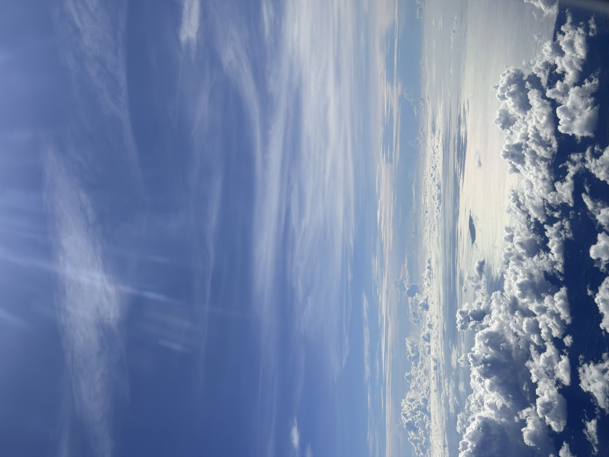
Somewhere above the clouds on the way to Cebu.
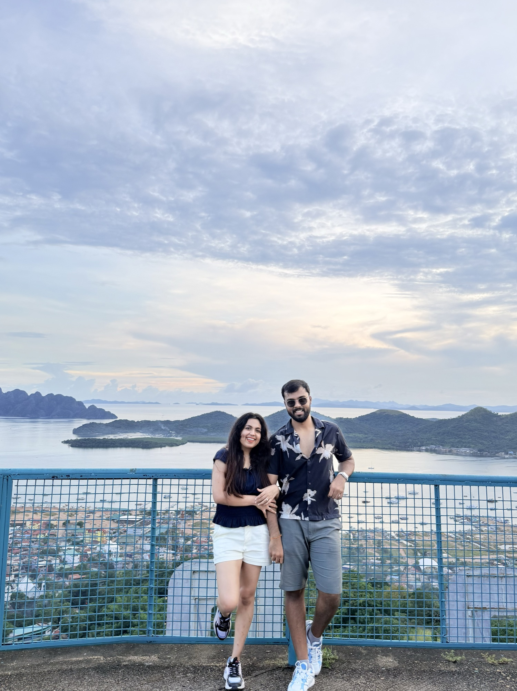
At the Mount Tapyas viewpoint over Coron Bay.
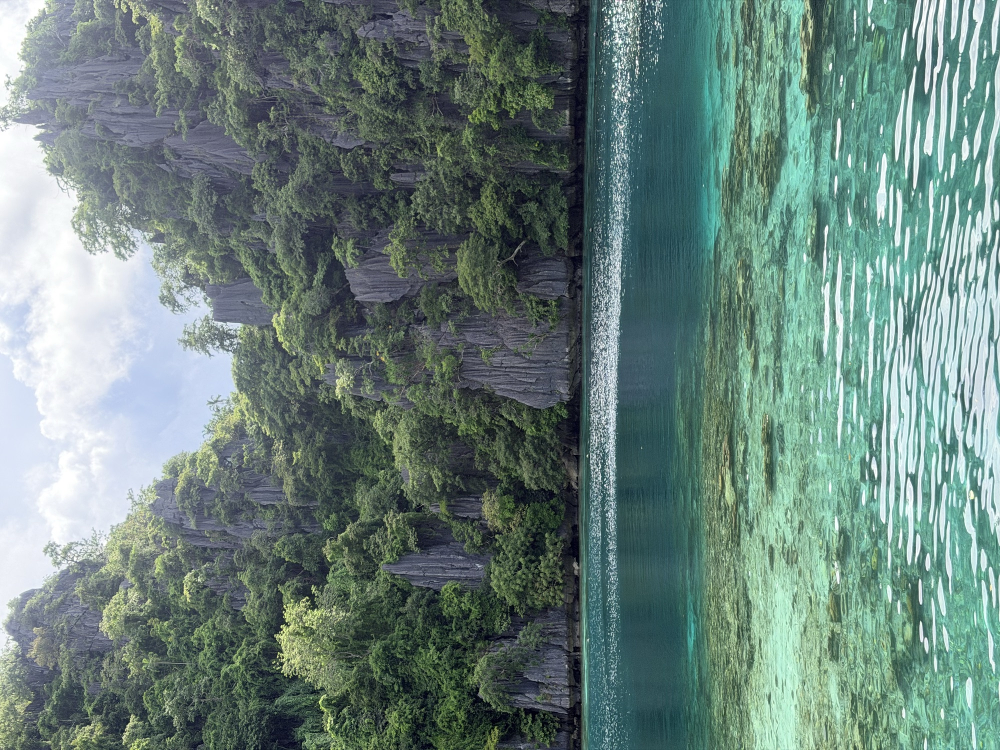
Limestone walls and glass-clear water on the Coron Ultimate Tour.
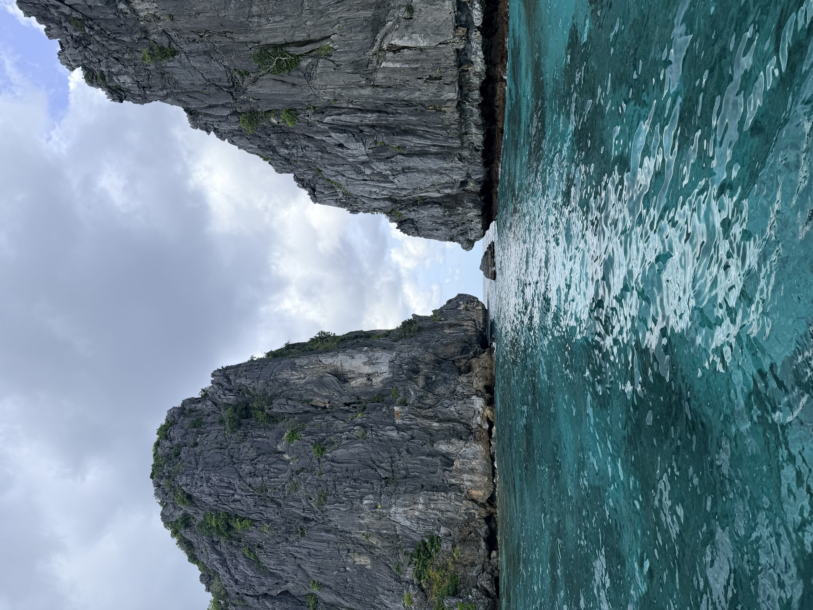
A narrow passage between limestone cliffs on the El Nido island tour.
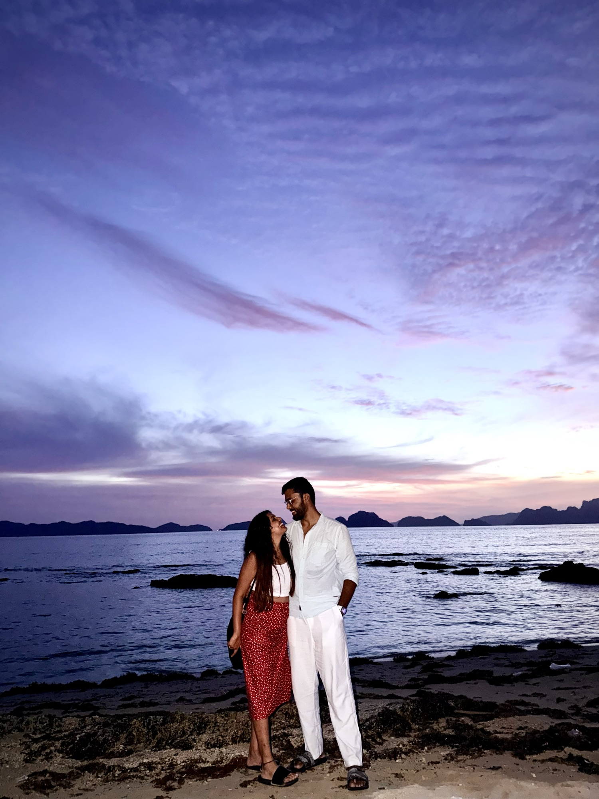
Dusk on the beach at El Nido, on the rest day.
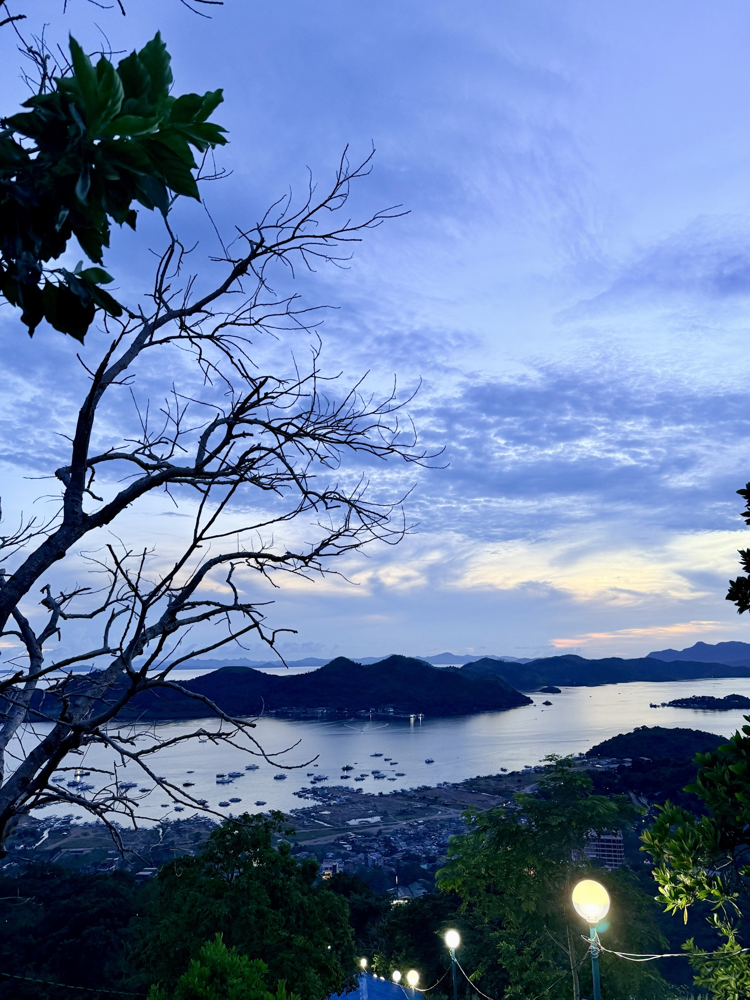
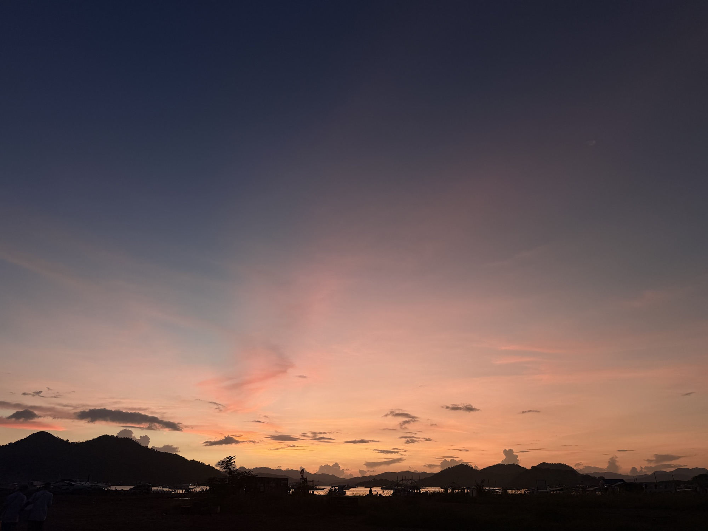
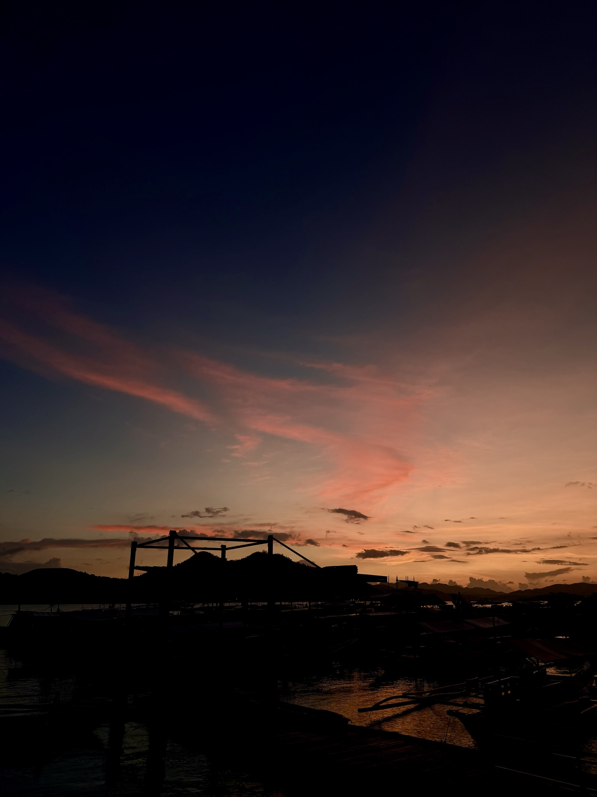
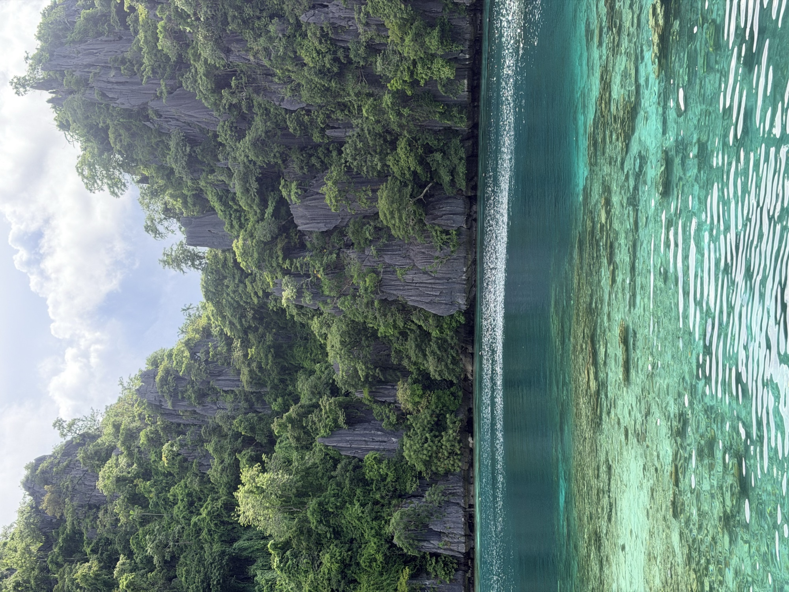
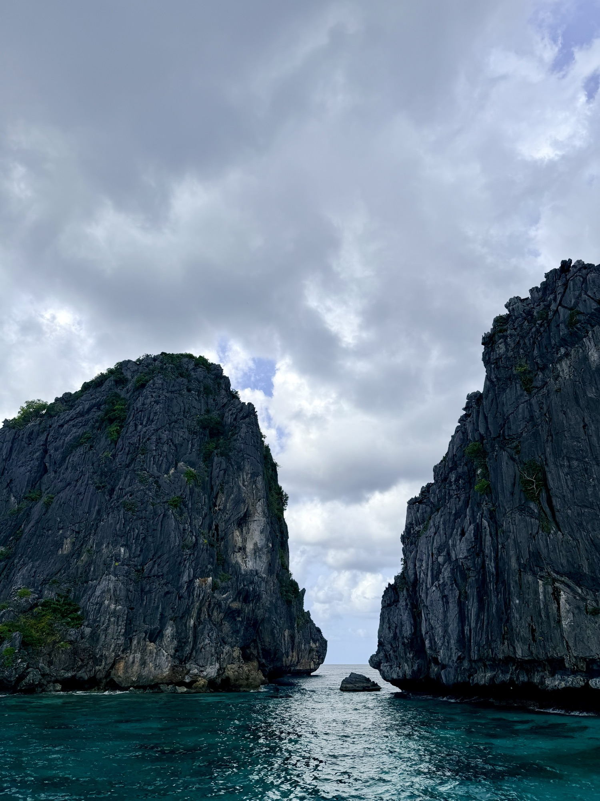
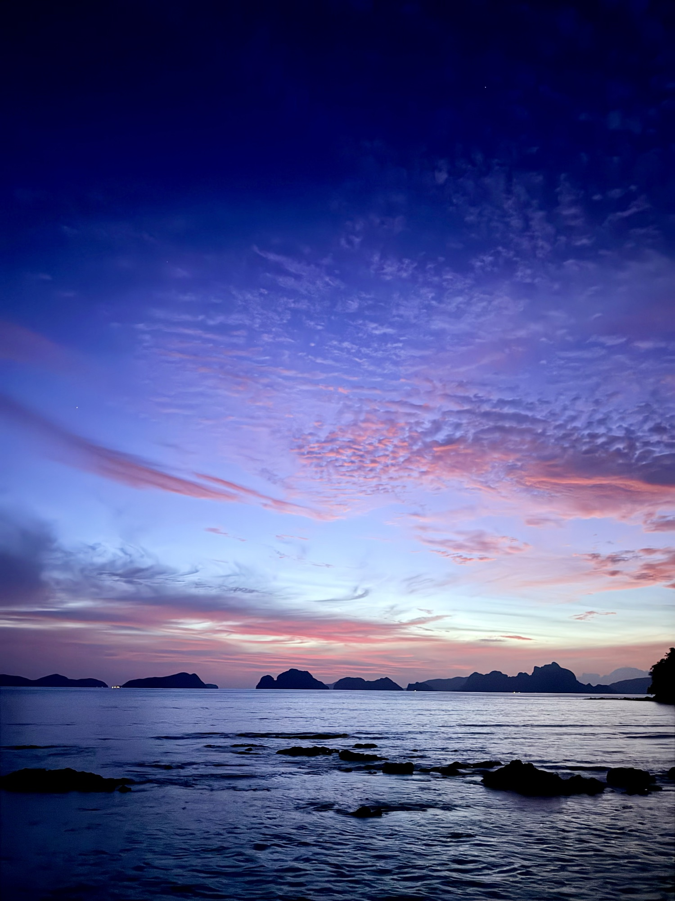
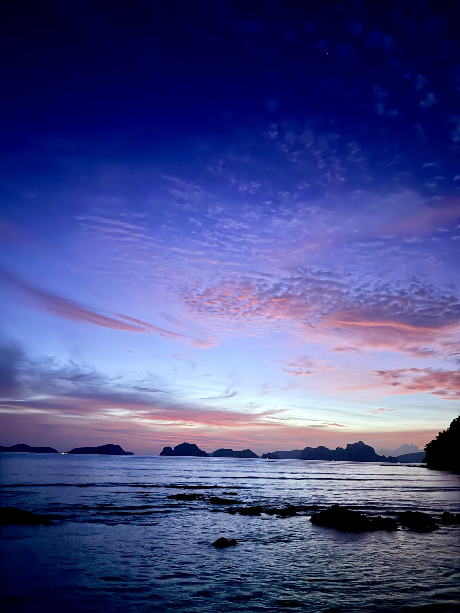
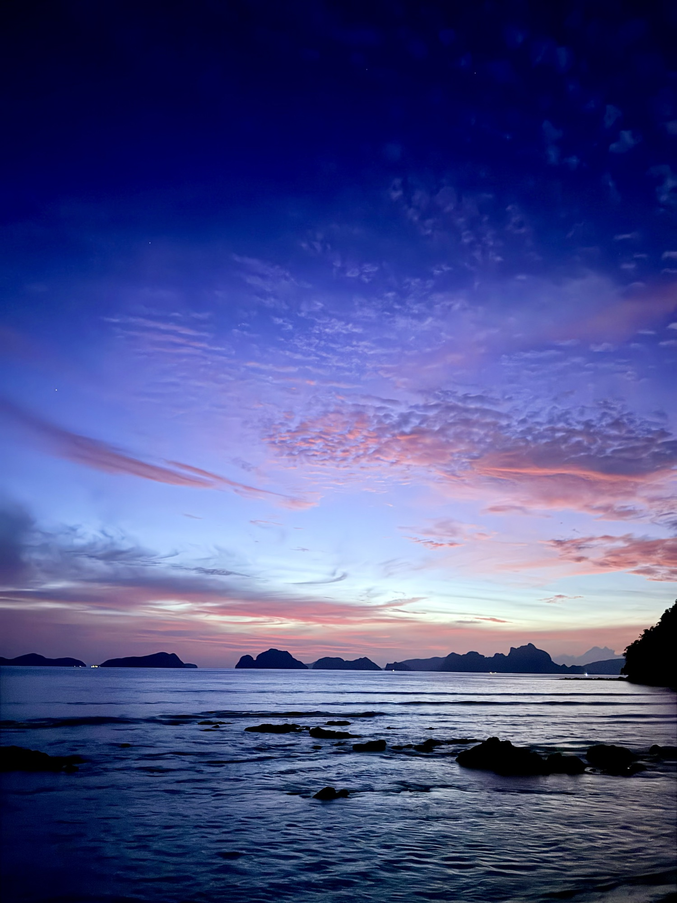
What the itinerary adds up to, per person, with two travelers sharing rooms — your confirmed costs (flights, tours, ferry) are used where available; domestic flights, stays and food are estimated from current averages at roughly ₹1.5 per peso.
Approximate figures — island tour prices vary by operator (roughly ₱1,200–₱2,650 per person in listings), and the luxury Coron resort is the biggest swing factor on the stay line. Travelling in a pair and booking flights early are the two easiest ways to keep this near the lower end.
7 days between Phuket, Phi Phi Islands and a Full Moon Party finale on Koh Samui.
Read the Diary →